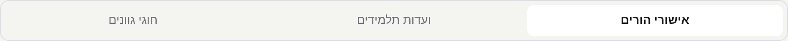
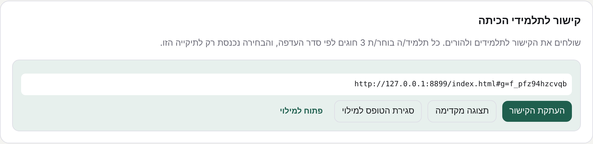
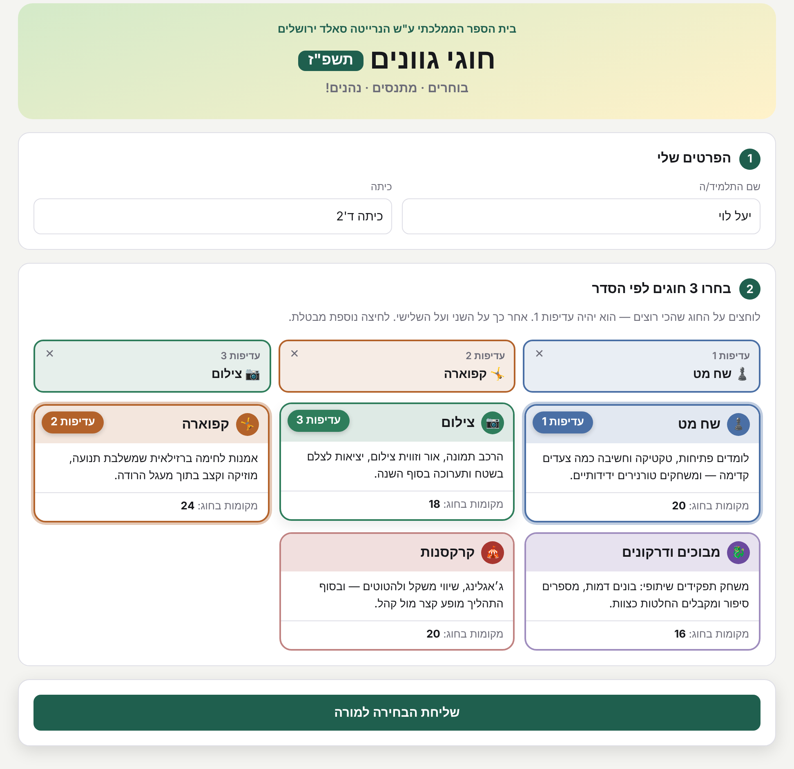
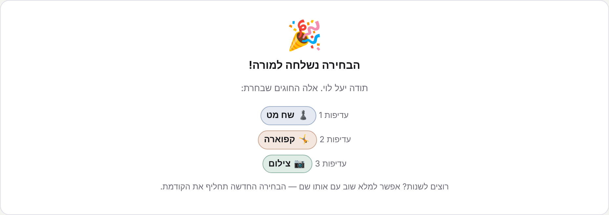
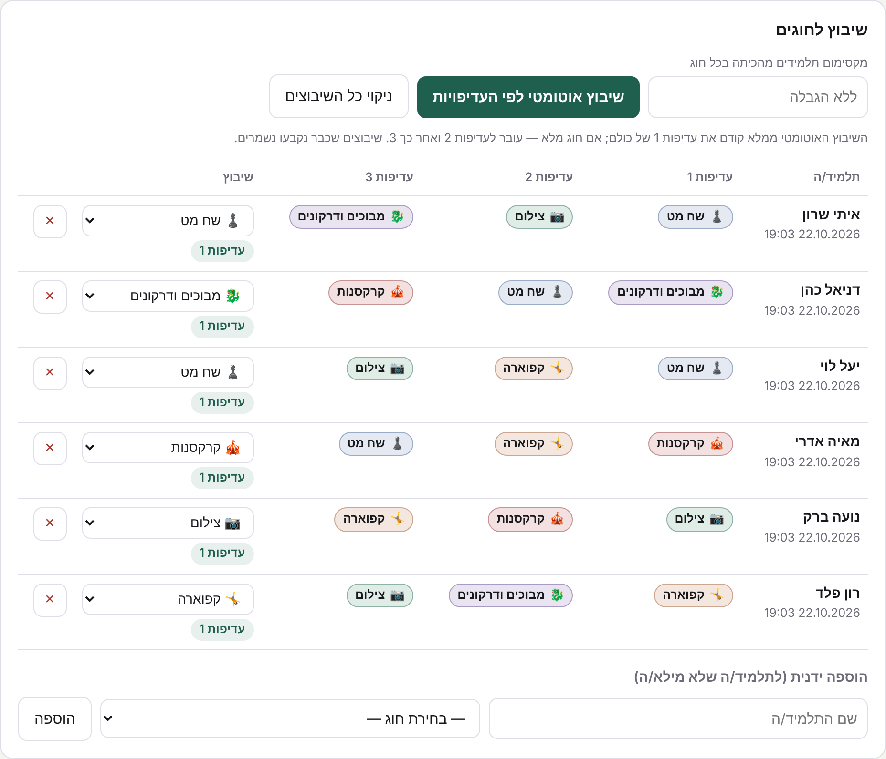
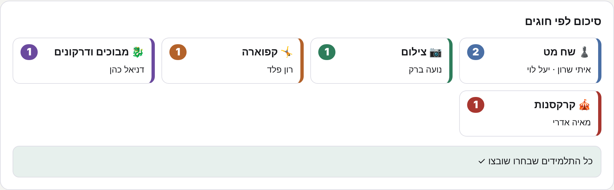
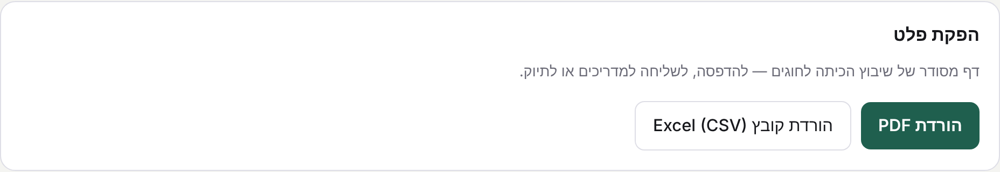

חמישה שלבים, מהקישור לתלמידים ועד הרשימה הסופית. סך הכול כעשר דקות עבודה.
אחרי הכניסה למערכת, בראש התיקייה שלכם יש שורת לשוניות. בוחרים את השלישית.

רשימת התלמידים שהגדרתם בלשונית "אישורי הורים" משמשת גם כאן — אין צורך להקליד אותה שוב.
לוחצים על "העתקת הקישור" ומדביקים אותו בקבוצת הוואטסאפ של הכיתה. הקישור שייך לכיתה שלכם בלבד, וכל בחירה שתתקבל דרכו תיכנס רק לתיקייה שלכם.

בתום תקופת הבחירה לוחצים על "סגירת הטופס למילוי" כדי לעצור הגשות נוספות.
התלמיד כותב את שמו ולוחץ על שלושה חוגים לפי סדר העדפה. הלחיצה הראשונה היא עדיפות 1, השנייה עדיפות 2 והשלישית עדיפות 3. לחיצה נוספת על חוג מבטלת אותו.


תלמיד שרוצה לשנות את בחירתו ממלא שוב עם אותו שם — הבחירה החדשה מחליפה את הקודמת.
בטבלה רואים מי מילא ומה בחר. לוחצים על "שיבוץ אוטומטי לפי העדיפויות" — המערכת נותנת לכל תלמיד את העדיפות הגבוהה ביותר שאפשר, לפי מספר המקומות בכל חוג. אפשר לשנות כל שיבוץ ידנית בתפריט שבעמודת "שיבוץ".

התווית הירוקה מתחת לכל שיבוץ מראה איזו עדיפות התלמיד קיבל. למעלה, בכרטיס "מי מילא", מופיעים שמות התלמידים שטרם מילאו.
בסיום מתקבל סיכום של החוגים עם שמות המשובצים, ואפשר להוריד אותו כקובץ PDF להדפסה או כקובץ Excel.

